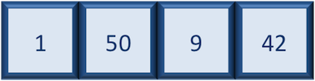
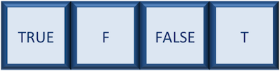
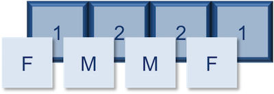
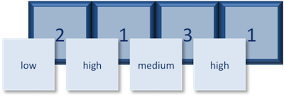
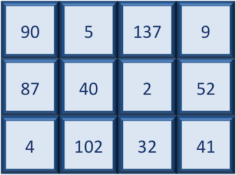
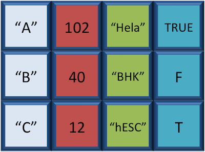
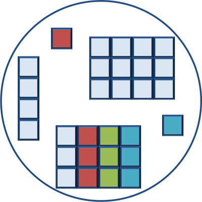

glengths <- c(4.6, 3000, 50000)
glengths[1] 4.6 3000.0 50000.0BO304
Tempo aproximado: 70 min
Variáveis podem conter valores de tipos específicos no R. Os seis tipos de dados utilizados pelo R incluem:
"numeric" para valores numéricos."character" para texto."integer" para números inteiros (2L)."logical" para TRUE e FALSE."complex" para números complexos."raw" (não abordado).| Tipo de Dado | Exemplos |
|---|---|
| Numeric | 1, 1.5, 20, pi |
| Character | “anytext”, “5”, “TRUE” |
| Integer | 2L, 500L, -17L |
| Logical | TRUE, FALSE, T, F |



glengths <- c(4.6, 3000, 50000)
glengths[1] 4.6 3000.0 50000.0species <- c("ecoli", "human", "corn")
species[1] "ecoli" "human" "corn" `
# Correção
species <- c("ecoli", "human", "corn")
species[1] "ecoli" "human" "corn" Exercício
combined <- c(glengths, species)
combined[1] "4.6" "3000" "50000" "ecoli" "human" "corn" 
expression <- c("low", "high", "medium", "high", "low", "medium", "high")
expression <- factor(expression)
expression[1] low high medium high low medium high
Levels: high low medium
samplegroup <- c(
"CTL", "CTL", "CTL",
"KO", "KO", "KO",
"OE", "OE", "OE"
)
samplegroup <- factor(samplegroup)
samplegroup[1] CTL CTL CTL KO KO KO OE OE OE
Levels: CTL KO OE

df <- data.frame(species, glengths)
df species glengths
1 ecoli 4.6
2 human 3000.0
3 corn 50000.0titles <- c("Catch-22", "Pride and Prejudice", "Nineteen Eighty Four")
pages <- c(453, 432, 328)
favorite_books <- data.frame(titles, pages)
favorite_books titles pages
1 Catch-22 453
2 Pride and Prejudice 432
3 Nineteen Eighty Four 328
number <- 5
list1 <- list(species, df, number)
list1[[1]]
[1] "ecoli" "human" "corn"
[[2]]
species glengths
1 ecoli 4.6
2 human 3000.0
3 corn 50000.0
[[3]]
[1] 5list2 <- list(species, glengths, number)
list2[[1]]
[1] "ecoli" "human" "corn"
[[2]]
[1] 4.6 3000.0 50000.0
[[3]]
[1] 5Material do Harvard Chan Bioinformatics Core
Licença CC BY 4.0.